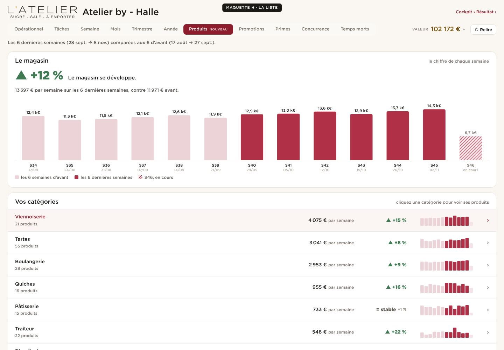
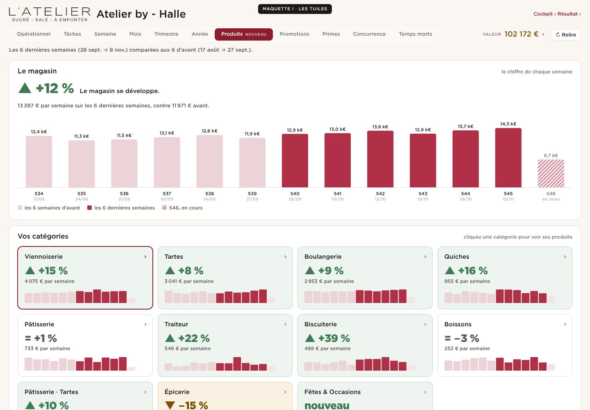
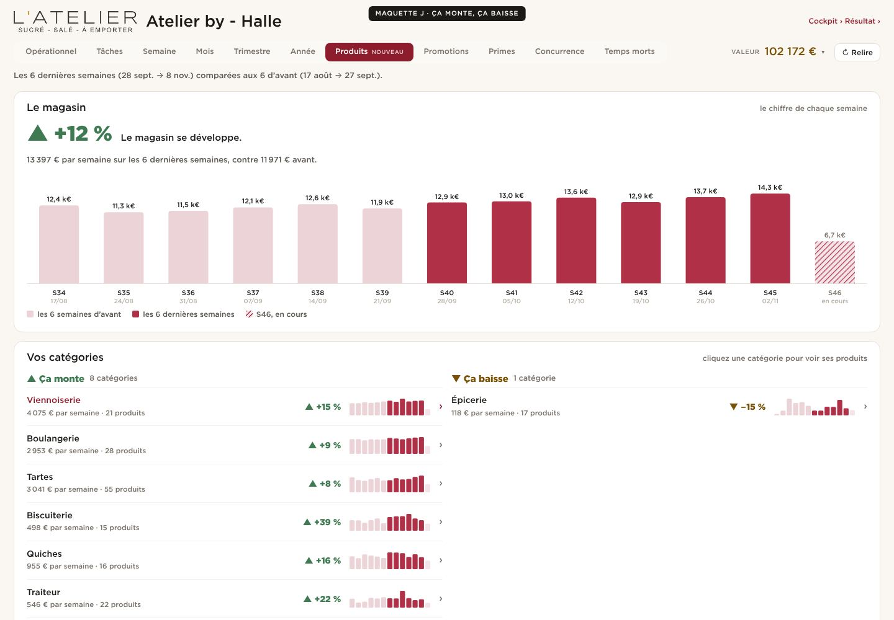
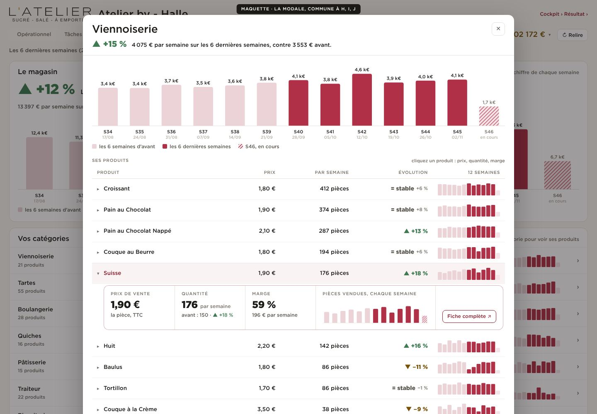

Une ligne par catégorie : son chiffre par semaine, sa flèche, ses 12 semaines.

Une tuile par catégorie, verte si elle monte, ocre si elle baisse.

Deux colonnes : ce qui monte, ce qui baisse ; les stables en une ligne.

